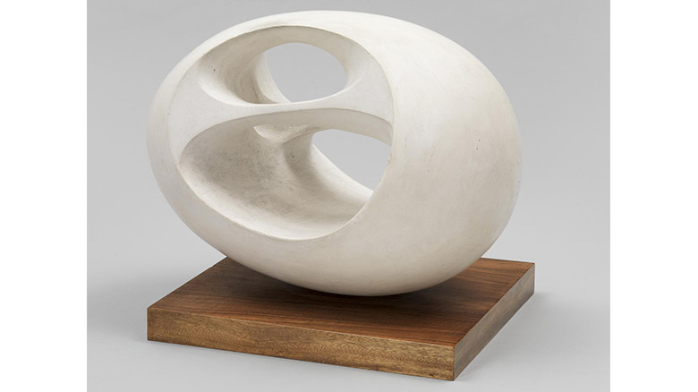

minimal

Barbara Hepworth
http://www.tate.org.uk/art/artists/dame-barbara-hepworth-1274-どんな人
最近の作品が続いたので、今回は1900年代の抽象造形作品を挙げます。イギリスの彫刻家です。有機的な抽象彫刻を作っていました。ヘンリームーア、ジャン・アルプなどとともに代表的な現代彫刻家であり、後世のアーティストに多く影響を与えました。名前の語感が個人的に好きです。バーバラ・ヘップワース
-解説
ヘップワースの作品はどれも自然の躍動感が現れています。有機的な曲線美と空間のバランスによって、硬い素材で作られいるはずの彫刻作品を、とても生き生きとしたものに表現しています。
-好きなところ
有機的で、触りごごちがよさそうな形はなかなか作るのは難しいと思うのですが、ヘップワースの作品はどれも気持ちがいい形をしていて好きです。デザインにおいても有機的な形はロゴやパターン模様などでよく見るので、こういった作家の作品は参考になるのではないでしょうか。